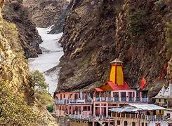

Yamunotri is a part of Char Dham (along with Gangotri, Kedarnath and Badrinath), the four most revered Hindu pilgrimages in the Himalayas. The small mountain hamlet, with the Yamunotri Temple at its centre, attracts thousands of devotees every year and is the commencing point of the Char Dham Yatra pilgrimage (May to October), which proceeds from Yamunotri to Gangotri and finally to Kedarnath and Badrinath. Lodged in a narrow gorge, close to the source of the Yamuna, the Yamunotri Temple is dedicated to Yamuna, the second-most sacred river after the Ganges. A dip in River Yamuna is said to protect one from untimely death. Devotees either walk or ride a palanquin or a pony to reach the temple (around 3,233 m above sea level) from Janki Chatti, a steep trek of about 3 km that takes about 3 hours.
Kapat is open now for darshan.
Best Time To Visit: April to June and September to November
